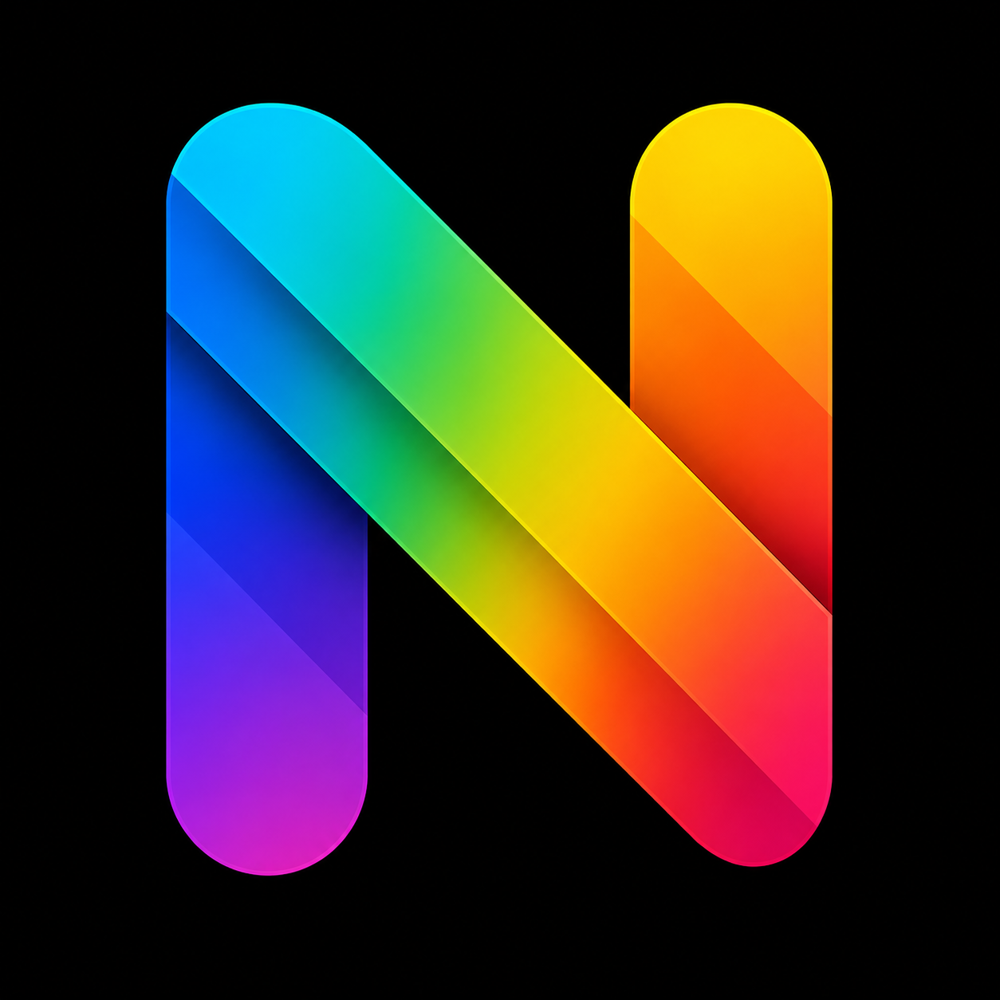
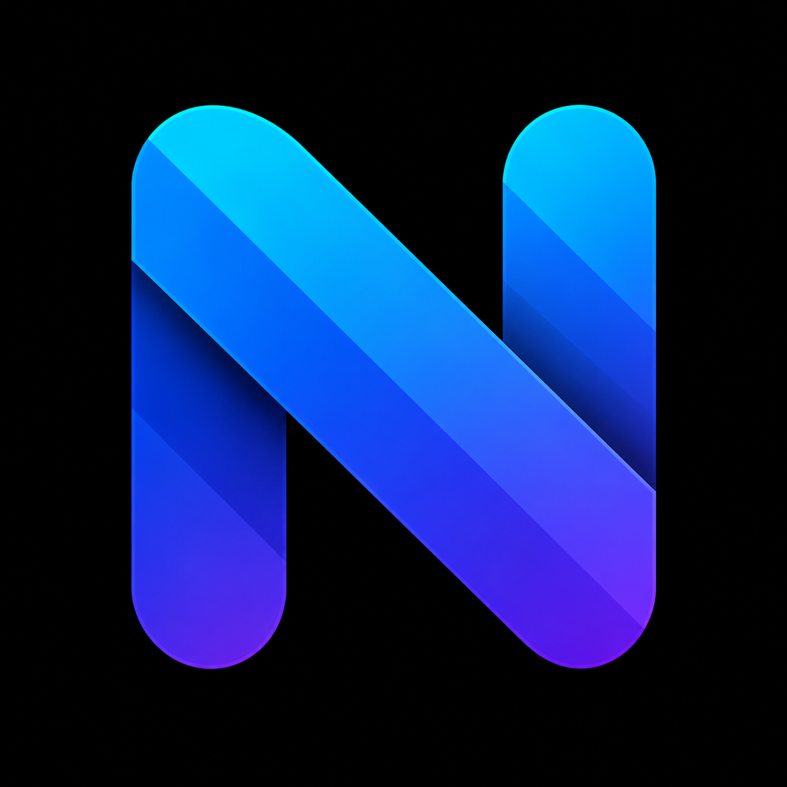
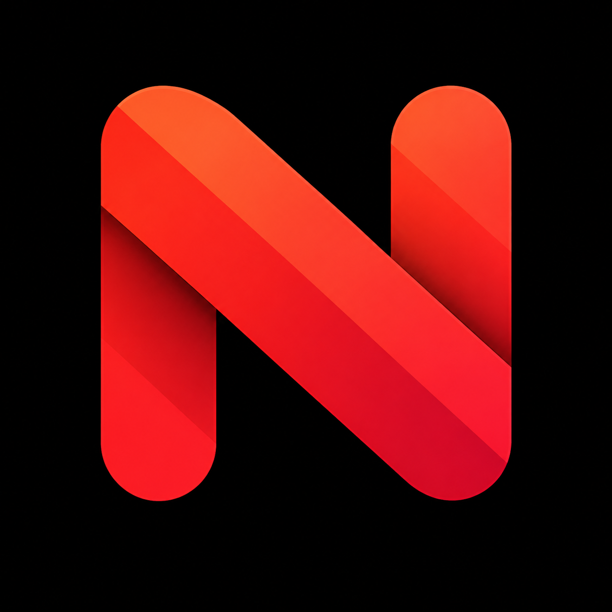
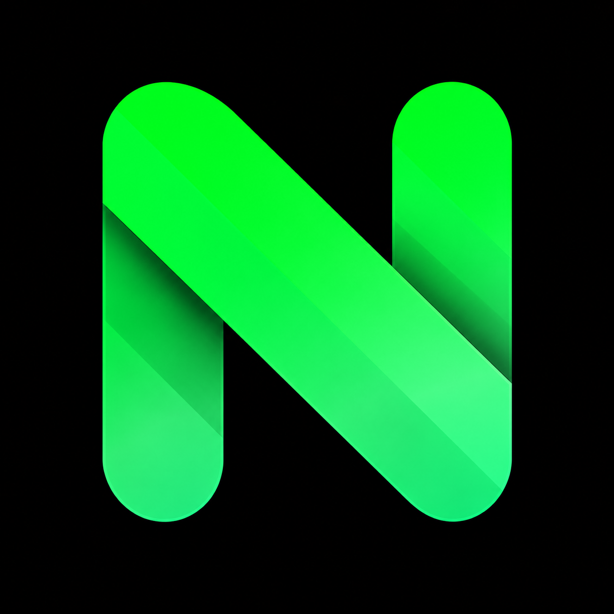
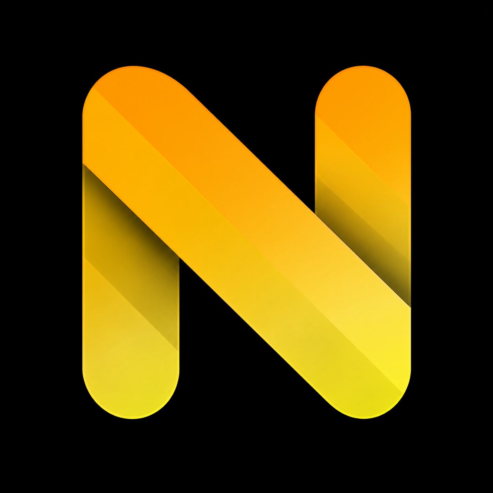
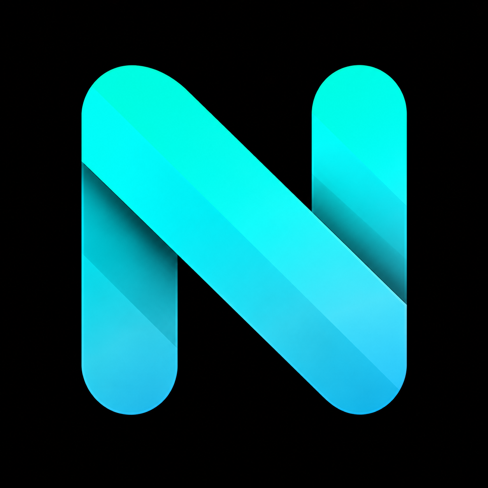

✦
Simplicidad
El propósito debe entenderse desde el primer momento, sin explicaciones innecesarias.
Herramientas rápidas, intuitivas y diseñadas para ayudarte a hacer más en menos tiempo. Una sola identidad, distintas soluciones y el mismo compromiso con la calidad.

Diseñamos para personas. Cada elemento existe para ayudar, orientar o ahorrar tiempo.
El propósito debe entenderse desde el primer momento, sin explicaciones innecesarias.
La estabilidad, el rendimiento y los pequeños detalles forman parte del producto.
Explicamos qué utiliza cada aplicación y respetamos las decisiones de sus usuarios.
Cada aplicación posee su propia paleta, pero todas comparten el Nemy Symbol v1.0 y una experiencia coherente.

Convierte fotografías y documentos en texto editable, exporta a PDF o Word y organiza tus escaneos localmente.
Primera aplicación
Convierte, organiza y trabaja con documentos PDF desde una experiencia clara y directa.
Próximamente
Escaneo rápido, corrección de perspectiva y mejora automática de legibilidad.
En desarrollo
Notas, tareas y listas en una experiencia limpia, rápida y sin distracciones.
En planificaciónTraducción de textos e imágenes con resultados comprensibles y fáciles de compartir.
En planificación
Herramientas inteligentes para resumir, organizar y transformar información útilmente.
InvestigaciónNemy Studios nació con una idea sencilla: construir aplicaciones que nosotros mismos estaríamos orgullosos de recomendar. No buscamos llenar teléfonos de funciones, sino resolver problemas reales con claridad, respeto y dedicación.
Leer el manifiesto ♡